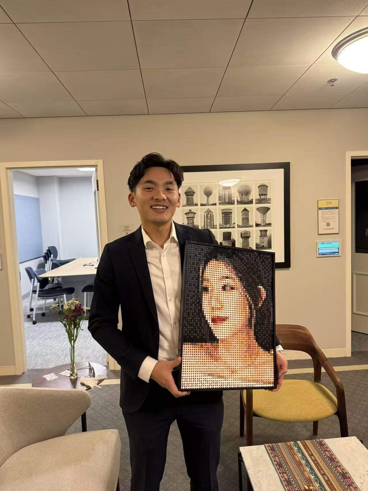

Choose a moment you share.
A family trip, a favorite date, a face you love. Preview how your photo translates into small, single-color bricks.
Try your photographPERSONALIZED DIY BRICK PORTRAIT KIT
You choose the photo. We turn it into a kit of individual, solid-color bricks for you to assemble. Build it with your partner or family, then keep a memory you made together.
Arrives unassembled · Not a finished print
DIY kits from $129 USD.
Try your photo before you decide. Ordering isn’t open yet.

REAL PHOTO · FINISHED BRICK PORTRAITYES, YOU BUILD IT YOURSELF
One photo becomes a hands-on project.
The finished portrait is only half the gift.
A family trip, a favorite date, a face you love. Preview how your photo translates into small, single-color bricks.
Try your photographPlace each piece to form the picture. Every brick is one solid color—not a printed puzzle piece.
20-piece illustration of the process, not the actual kit size or palette.Pick a playlist. Take turns adding pieces. Talk about the day in the photo. Then find a place for the portrait you built together.
A shared project, not a race. Make room for a few sessions.
WHICH MOMENT WOULD YOU KEEP?
Start with your people, your story, or a place you shared.
01 / FAMILY
Bring Mom or Grandma a kit made from your favorite family photo—and sit down to build it together.
Preview a family kit02 / THE TWO OF YOU
Choose the moment you both love. Put your phones down and build it together. No wedding required.
Preview a couple kit03 / SHARED TRIPS
Turn a shared adventure into your next shared project. Build, reminisce, and give the memory a place at home.
Preview a travel kitA MEMORY THAT FEELS AT HOME
Meaning matters. So does how it looks.
Explore the texture, size, and frame before you choose.
01 / THE COFFEE TABLE
On a shelf or beside a favorite chair. A shared memory with a place in everyday life.
Picture yours here ↗YOUR PHOTO. YOUR DIY KIT.
Try your photograph. Compare it with the brick texture.
Choose a frame. Then imagine building it together.
8 mm round bricks · Photo-matched colour simulation, not a confirmed brick palette.
Your photo stays in your browser.
20.8″ × 20.8″ · 52.8 × 52.8 cm
$177USD
Estimated 66 × 66 grid · 4,356 round bricks
Your kit arrives unassembled. Ordering isn’t open yet.
Your selected size sets the grid. Each 8 mm cell samples the colours in that part of your photo and becomes one round brick. Each brick has one solid colour, not a printed fragment of the photo. The optional low-light correction lifts shadow colours before sampling; mild sharpening emphasizes edges without adding more bricks.
Colours are simulated directly from your photo. Actual results depend on the available brick colours, lighting and image quality. At the smallest size, 50 × 66 bricks provide only 3,300 colour samples for the whole scene. Small faces and distant details may remain simplified. Larger sizes use more bricks, so faces can retain more detail.
Grid counts are estimates based on 8 mm spacing and the listed dimensions; the final count depends on the frame allowance. Home views are styled mockups, not measurements of your room; check furniture clearance before choosing a size.
TWO WAYS TO MAKE IT MEAN SOMETHING
Give the unassembled kit, then spend time making it with your family or partner. The photo holds one memory. Building it together creates another.
Assemble the portrait yourself before giving it. Your own time and care become part of the gift.
This is a DIY kit, not a ready-made portrait. Build time varies with size and pace; allow for multiple sessions.
YOUR MOMENTS, KEPT CLOSE.